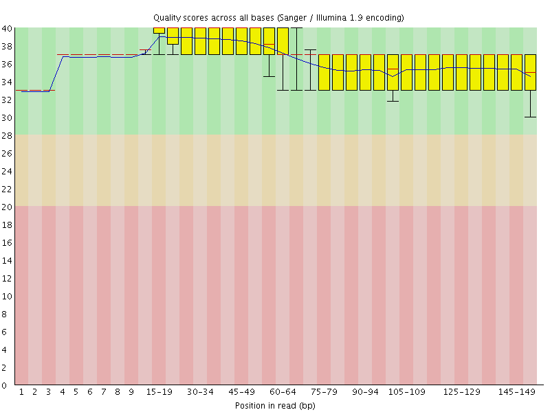
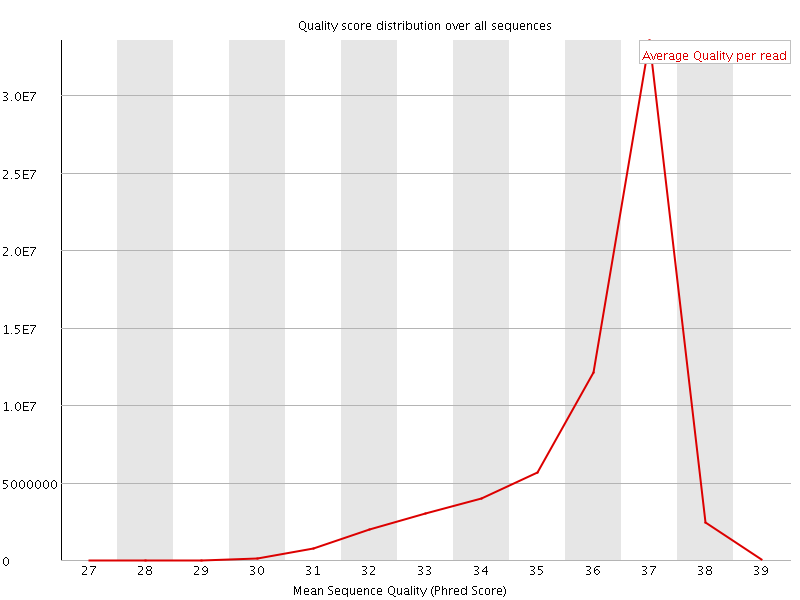
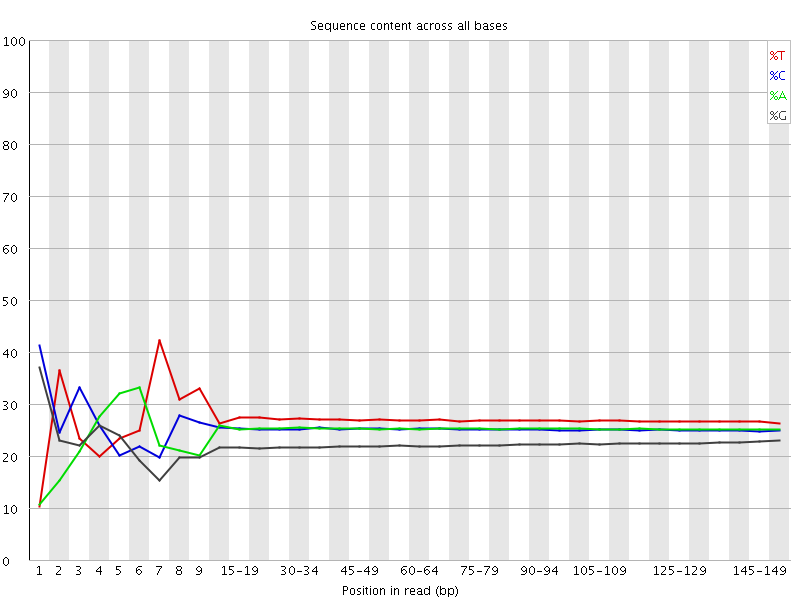
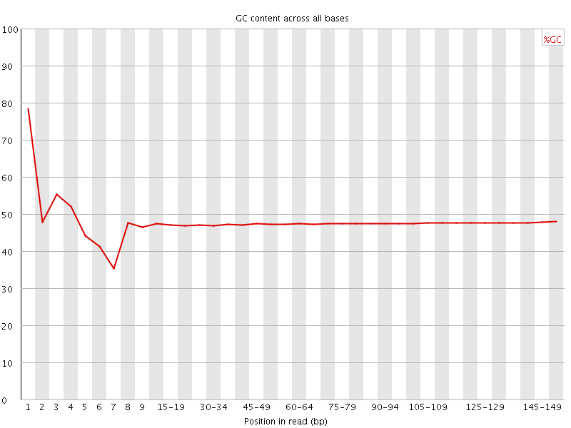
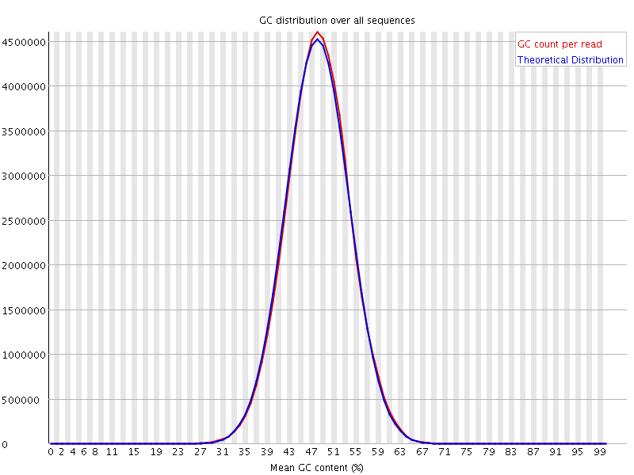
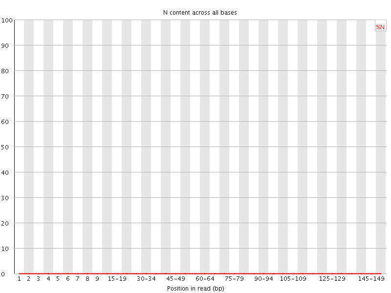
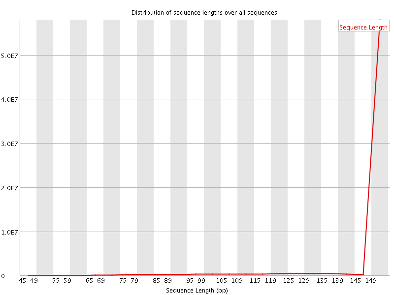
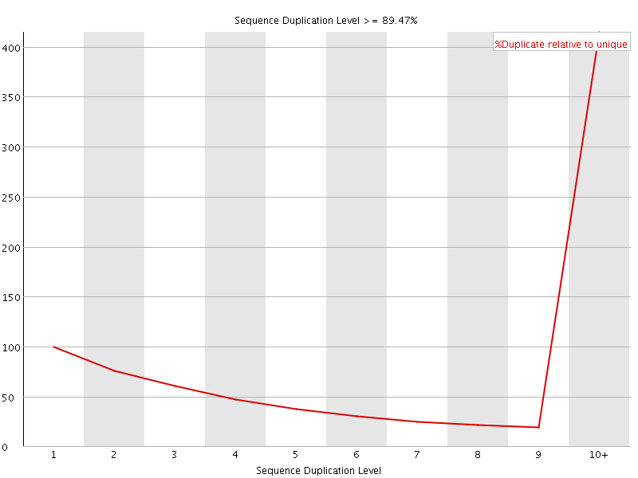
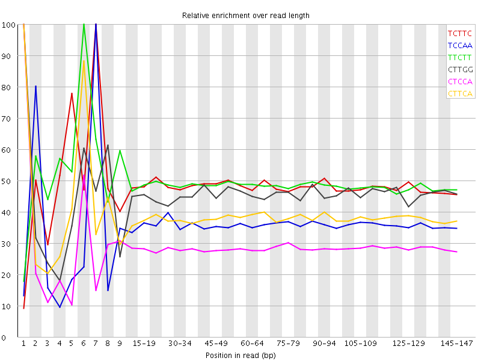

![[OK]](Icons/tick.png) Basic Statistics
Basic Statistics
| Measure | Value |
|---|---|
| Filename | 1F_fastq-q-filt.txt |
| File type | Conventional base calls |
| Encoding | Sanger / Illumina 1.9 |
| Total Sequences | 64122859 |
| Filtered Sequences | 0 |
| Sequence length | 50-151 |
| %GC | 47 |
Per base sequence quality

Per sequence quality scores

![[FAIL]](Icons/error.png) Per base sequence content
Per base sequence content

Per base GC content

Per sequence GC content

Per base N content

![[WARN]](Icons/warning.png) Sequence Length Distribution
Sequence Length Distribution

Sequence Duplication Levels

Overrepresented sequences
No overrepresented sequences
Kmer Content

| Sequence | Count | Obs/Exp Overall | Obs/Exp Max | Max Obs/Exp Position |
|---|---|---|---|---|
| TCTTC | 34471905 | 2.9505913 | 6.115187 | 7 |
| TCCAA | 26676090 | 2.614145 | 7.3003097 | 7 |
| TTCTT | 31805125 | 2.5567465 | 5.2457433 | 6 |
| CTTGG | 21093250 | 2.4884348 | 5.450253 | 1 |
| CTCCA | 23769285 | 2.3179014 | 8.112559 | 1 |
| CTTCA | 24872030 | 2.2779117 | 5.926483 | 1 |
| TCTTG | 22175905 | 2.1595738 | 5.0267787 | 7 |
| GGCAA | 15830690 | 2.1381903 | 6.882774 | 1 |
| ATCCA | 21620975 | 2.118765 | 6.613503 | 6 |
| TTCCA | 23105635 | 2.1161358 | 5.4440465 | 6 |
| CTTGA | 19712710 | 2.0540683 | 5.1500745 | 1 |
| ATCAA | 20343545 | 2.0033774 | 5.3125567 | 6 |
| CTCCT | 20540335 | 1.871994 | 5.560216 | 1 |
| GGCAG | 11614525 | 1.7760786 | 7.023454 | 1 |
| TTCAA | 19293855 | 1.7757154 | 5.2450075 | 7 |
| CTCAA | 17114825 | 1.6771811 | 5.6620455 | 1 |
| CAATC | 16517035 | 1.6186004 | 5.5371823 | 4 |
| GTCAA | 13666780 | 1.5237602 | 5.3364406 | 1 |
| GTCCA | 12788830 | 1.4189025 | 5.6818085 | 1 |